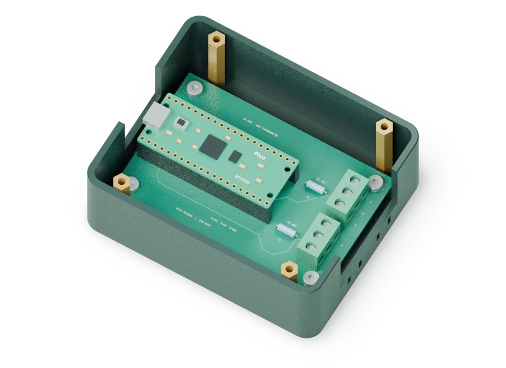

Регистратор
температуры.
Регистратор LM-04B считывает температуру с двух независимых датчиков и передаёт показания по USB. Плату и корпус можно изготовить по открытым исходникам.

Измерения.
Подключите собранную плату или откройте запись. Сайт обрабатывает данные в браузере. Сохраните результаты перед закрытием вкладки.
Результаты появятся после подключения или импорта записи.
Качество данных и реквизиты опыта
Подключите плату или откройте файл для просмотра статистики.
Одновременный сигнал
Введите порог различимости каждого внешнего измерителя по его протоколу. Будут учтены интервалы, на обоих концах которых оба сигнала превышали свои пороги.
Импорт принимает температурные записи LM04B/1 в JSONL и CSV с синхронными рядами мощности от двух внешних каналов. Формат CSV · Пустой шаблон · Запись с компьютера
Собрать стенд.
Для первого опыта достаточно макетной платы, Pico и двух датчиков. Для постоянной установки подготовлены двухслойная плата и печатный корпус.
Комплект для изготовления
Электроника, корпус, прошивка и протокол первого включения в одном архиве.
Скачать комплект ZIP ↓Порядок сборки и проверки ↗Геометрия и разводка проверены в цифровых моделях. Поля для результатов первого реального экземпляра открыты. Бланк испытаний CSV
Медицинская
платформа.
LM-04B выполняет независимые измерения температуры на лабораторном образце. Для исследования абляции нужен серийный медицинский аппарат с подтверждённой конфигурацией выходов.
Для FiberLase S описаны две длины волны через один инструмент. Для EchoLaser X4 M095D1 указаны до четырёх отдельных световодов на 1064 нм. Совместное выполнение требований исходного задания пока открыто.